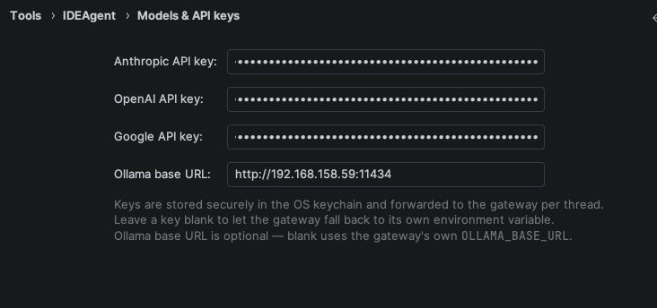

Your containers are running — nice work. Now the PyCharm IDEAgent plugin just needs to know where to find them. This is a short, five-minute setup you do once. Follow the steps in order, top to bottom. Each one is a single screen in the plugin's Settings.
This guide picks up after the gateway containers are already up and running. You just need two things handy:
localhost. If Docker runs on a
different machine (like a server in another room), it's that machine's real IP
address — for example 192.168.158.59.Now open PyCharm, go to Settings → Tools → IDEAgent, and follow along.
On the main IDEAgent settings screen there is a Gateway URL box. Type in the address of the machine running your containers, followed by the gateway port.
http://localhost:8765http://192.168.158.59:8765Then press Test connection. If it turns green, the plugin can see your gateway and you're good to move on. If it doesn't, double-check the IP and that the containers are running.

localhost if it runs on this machine), then press Test connection.
The MCP server is where the agent gets its tools — searching your code, remembering your
project, and more. Go to MCP Servers, press Add, and paste in
the block below. Change <Local Container IP> to the same address you
used in Step 1 (localhost, or your server's IP).
After you add it, make sure it shows a green dot (connected). You can press
Refresh status to check. The docs-langchain and
reference-langchain servers you may see there are optional extras — the one you must
have is mcp-server.

mcp-server with the block above, then check for the green “connected” dot. Note the MCP port is 5820 — different from the gateway port in Step 1.Open Models & API keys. Here you tell the plugin which brain to use:
http://192.168.158.59:11434.Your keys are stored safely in your computer's own keychain — never in a plain text file. Leave a box blank to let the gateway fall back to its own setting for that provider.

Close and reopen PyCharm so all your settings load fresh. When it's back, open Dedicated Models. These are two small helper models that keep things tidy:
A small, fast model is plenty for both of these.

The RAG File Watcher keeps your project search index up to date as you edit, so the agent always sees the latest version of your code. It's a separate plugin you install from the JetBrains Marketplace (search for it by name inside PyCharm's plugin settings). Once installed, point it at your RAG server and let it index your project. You can skip this at first and add it later.
Want to speak to the agent and have it read replies aloud? That uses two free, fully local tools: Whisper for speech-to-text (listening to you) and Piper for text-to-speech (talking back). Nothing you say leaves your computer. Install them on the machine where PyCharm runs, then the plugin can detect them.
The easiest way is with Homebrew. Open the Terminal app and run:
Open a terminal. For most distributions (Ubuntu / Debian):
On other distributions use your own package manager (for example dnf on Fedora)
to install python3-pip first, then the same two pip3 commands.
First install Python and tick “Add Python to PATH” during setup. Then open PowerShell and run:
Now you can dictate to the agent and hear its answers — all on your own machine, with no cloud voice service involved.